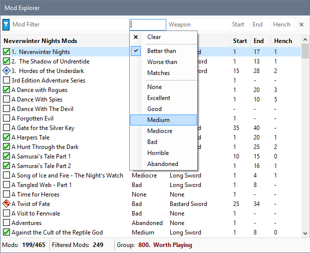
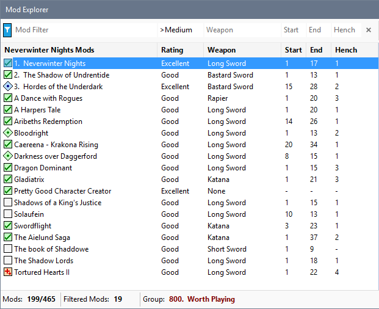
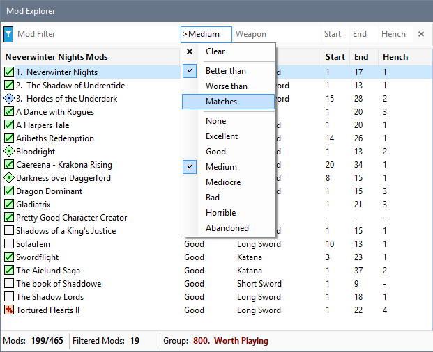
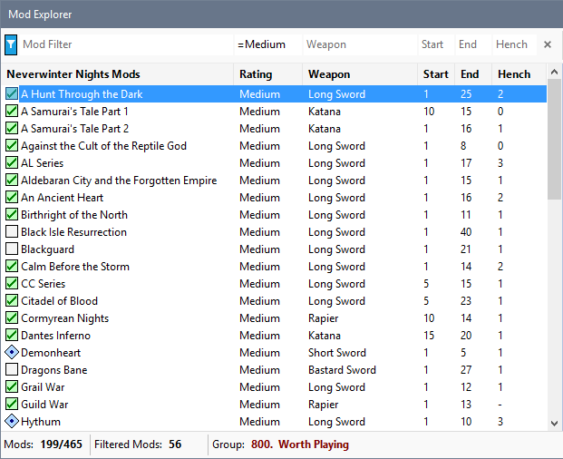
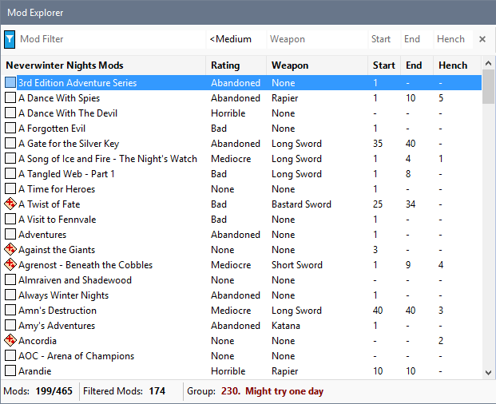

Click the Rating filter box and select the Rating you want to use as the criteria.

The Mod list is updated based on the Rating you specified.

You can also change how the Rating you select is used to filter the mods. For example, to list Mods that have a specific Rating, select Matches from the Rating filter menu.

The list now shows all Mods that have the Rating you selected.

Select Worse than from the Rating filter menu to show Mods that have a lower Rating than the one you specified.

Click Clear from the Rating filter menu to remove your Rating filter criteria.

Filter by Rating
Filter by Start, End or Henchman